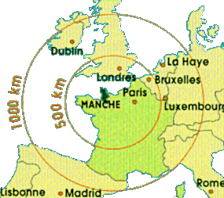

!! Bientôt: revue de presse 1919-1938 !!
VILLIERS-FOSSARD
|
Villiers-Fossard est une petite commune normande située à quelques kilomètres de Saint Lô, dans le département de la Manche. Pour être honnête, rien de bien particulier ne s'y rattache : pas de personnage notable, pas de monument vraiment remarquable, pas de site naturel pittoresque. Mais c'est sans doute là où réside son charme : dans sa simplicité. La simplicité, ça signifie une certaine tranquillité ou quiétude, une certaine douceur de vivre, mais c'est également synonyme de sincérité et d'authenticité. |

|
Mais trève de bavardage, restons simples, et venons-en directement aux faits.
Découvrir Villiers dans l'histoire :
Découvrir Villiers par l'image :
Villiers aujourd'hui :
Attention : cette page n'est pas la page officielle de la commune de Villiers-Fossard, mais vous pouvez les joindre à mairievilliersfossard@wanadoo.fr
La température
à Villiers aujourd'hui :